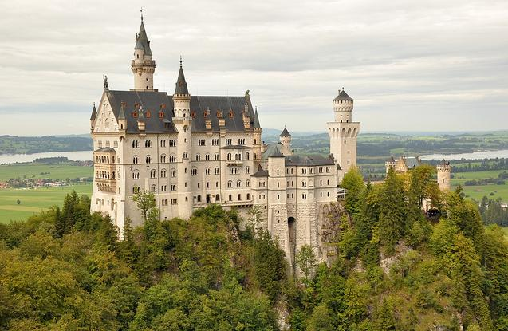
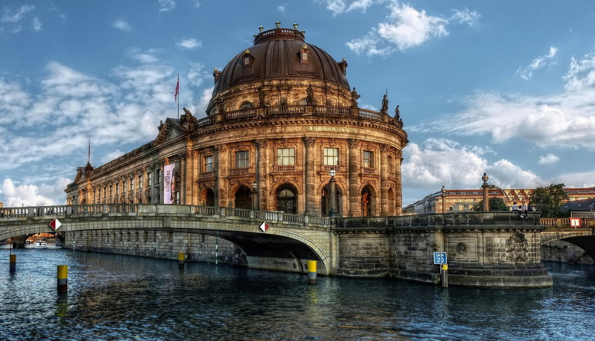
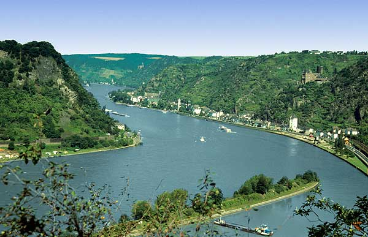
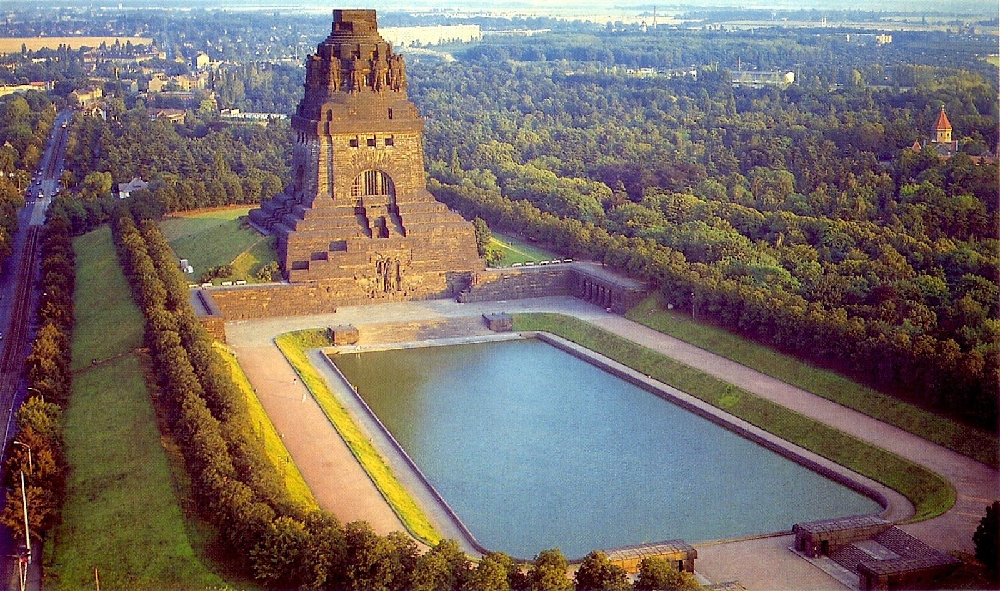

Vincent's Dream Vacation to Germany
| |
Destination |
Description |
Cost |
|
 |
Neuschwanstein Castle |
Neuschwanstein castle is a nineteenth-century Romansque Revival palace in
southwest Bavaria Germany. It is one of the most popular turist destinations
in Europe, partly due to how it reminds visitors of fairytales. I want to visit
this location because I love European architecture and would love to see the little
details that went into the building. |
$15 |
|
 |
Museum Island |
Museum Island, located in Berlin, Germany, is an ensemble of five museums.
This makes it the go-to museum for art and history lovers. I love museums so I
would love to be able to visit 5 at the same time! |
$30 |
|
 |
Lorelei |
Lorelei is a large rock on the Rhine river. It stands 194-metre-high and
is shrouded in legend. This popular tourist attraction is not only aesthetically
appealing, but also a great place to learn about old stories in the German
culture. And these stories are something I would love to here! |
free |
|
 |
The Monument to the Battle of the Nations |
The Monument to the Battle of the Nations in Leipzig Germany is dedicated
to the 1813 Battle of Leipzig. Enriched in German history, this would be a great
place for tourists to dive into German history that many do not know about. And
if there is something I love, it's knowing things that others don't! |
$10 |